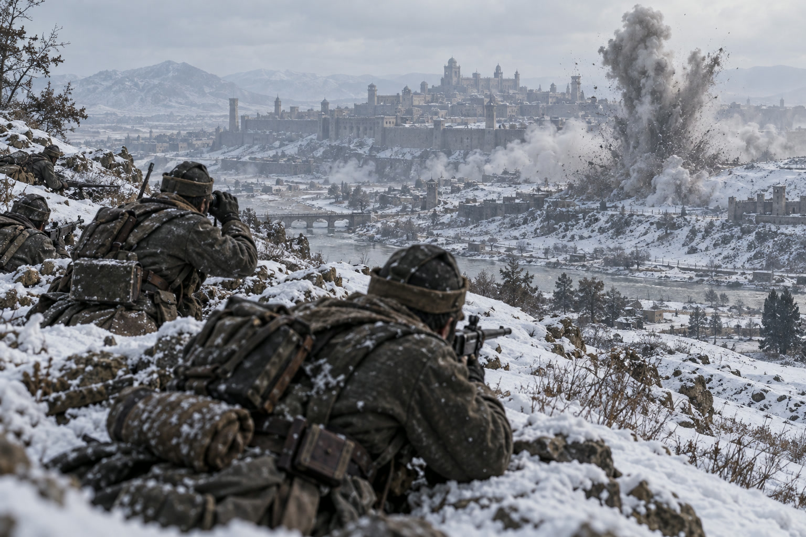

泰平、帝都アルガリストの目前に迫る
帝国は対人ミサイルで自国領の敵兵を叩く
帝国の損害は累計10万6千人 オラニウムには藍岬が開戦し、二つの前線を抱えた

【総合部】第150期、セントラ大陸東部で泰平天国がアルガリスト帝国の帝都のすぐ目前まで兵を進めた。帝国がこの冬に出した損害は累計10万6千人に達し、追い詰められた帝国は、泰平兵が立つ自国領の山へ対人ミサイルを撃ち込むという苦肉の抵抗に出た。都そのものは今期も帝国の手に残ったが、守りはいよいよ帝都の城壁際まで後退した。詳報は2面。
泰平は帝都の東に残る帝国領の山を占領し、都を囲む輪をさらに縮めた。これに対し帝国は、その山に取りついた泰平兵へ向けて対人ミサイルを発射し、多数を負傷させた。対人ミサイルは建物を壊さず人のみを狙う兵器で、自国の土地に撃ち込んででも敵兵を削ろうという、守る側の必死の一手である。
藍岬がオラニウムに開戦、二正面に
ノルステア大陸北部では、藍岬共和国連邦がオラニウム連邦へ正式に開戦した。オラニウムはすでに朱川共和国と交戦しており、ここに藍岬が加わって二つの前線を抱えることになった。さらに第151期には桃谷連邦共和国の開戦も控える。オラニウムは今期、朱川の首都丹城の町へ再びミサイルを撃ち込み、人口を削った。攻める一方で、背後に敵が増えていく。詳報は3面。
カペレナ、黒潮の町を再び奪う
アカピ大陸北西岸では、カペレナ王国が黒潮自治国の町を占領し、食糧4万7,800トンを徴発した。黒潮は前期に移民と徴兵で人口を倍近くに戻したばかりだったが、今期はこの町の喪失で再び人口を減らした。黒潮がこの戦いで受けた損害は、累計で20万人に迫っている。詳報は4面。社会面では、冬の火災が前期の半分以下、6か所2万5,500人にとどまった。詳報は5面。